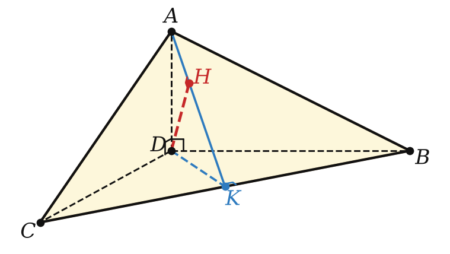
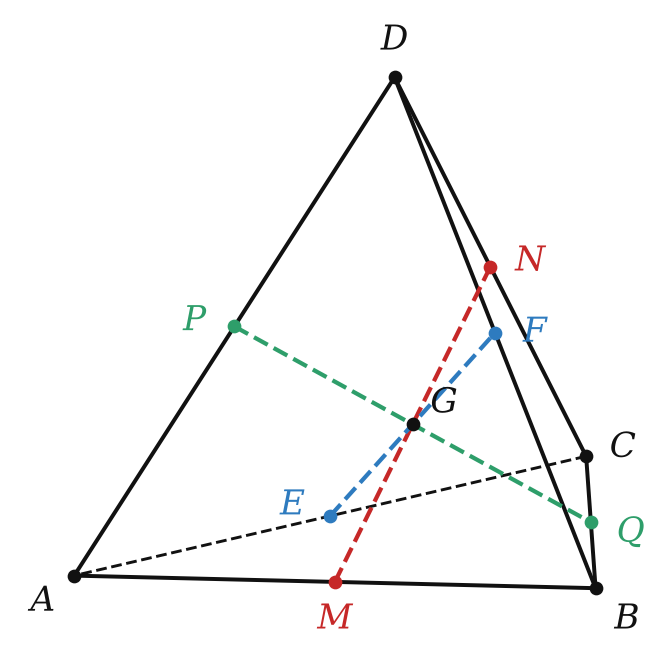
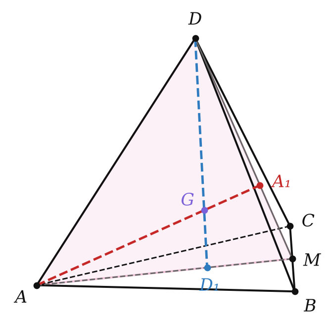
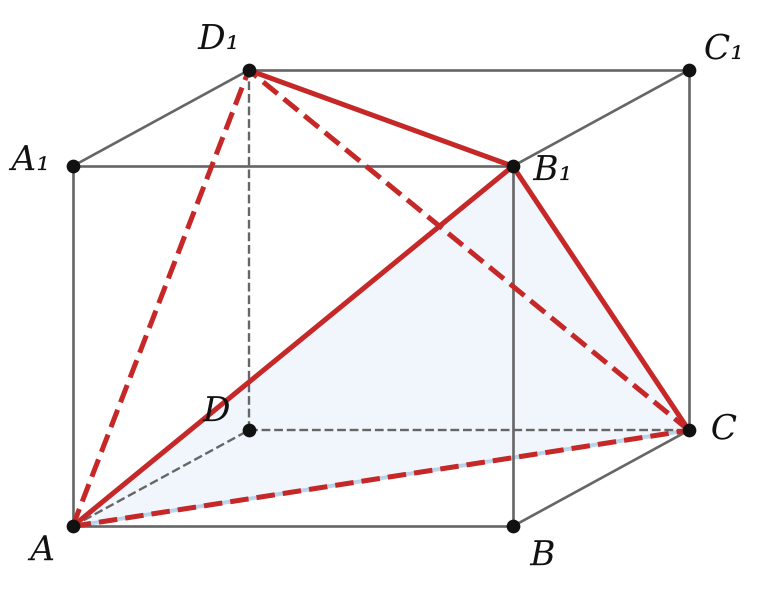
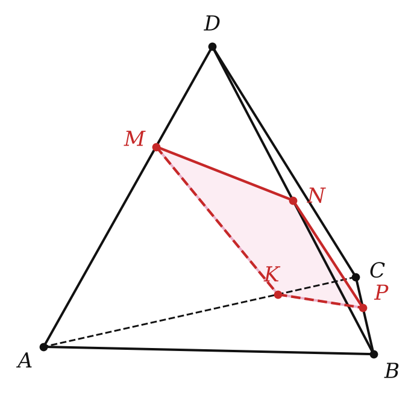

Теория
Треугольная пирамида имеет четыре грани, поэтому её называют ещё тетраэдром («четырёхгранник» по-гречески). Любая грань тетраэдра может служить его основанием. В планиметрии треугольник — главная фигура, через которую изучают остальные; в стереометрии ту же роль играет тетраэдр. Сегодня проверим, какие «треугольные» факты переносятся на тетраэдр, а какие — нет.
1. Высоты: пересекаются не всегда
Высоты треугольника всегда пересекаются в одной точке. У тетраэдра — нет. Пример: возьми прямоугольные треугольники ABC и ABD в перпендикулярных плоскостях, ∠ABC = ∠BAD = 90°. Тогда CB ⊥ (ABD) и DA ⊥ (ABC) (свойство перпендикулярных плоскостей, § 15), то есть CB и DA — высоты тетраэдра. Но они лежат на скрещивающихся прямых и общей точки не имеют.
Если прямые, содержащие высоты тетраэдра, пересекаются в одной точке, то такой тетраэдр называют ортоцентрическим.

Пример ортоцентрического тетраэдра: все плоские углы при вершине D прямые. Тогда AD ⊥ DB и AD ⊥ DC, значит, AD ⊥ (DBC) — AD высота. Так же BD и CD — высоты. Все три проходят через D, и четвёртая высота (из D) — тоже.
Если тетраэдр имеет две пары перпендикулярных скрещивающихся рёбер, то остальные два ребра тоже перпендикулярны.
Пусть в тетраэдре DABC DB ⊥ AC и DC ⊥ AB. Опишем вокруг тетраэдра параллелепипед: через каждое ребро проведём плоскость, параллельную противолежащему ребру; шесть рёбер тетраэдра станут диагоналями шести граней параллелепипеда.
Противоположные рёбра тетраэдра DB и AC — диагонали двух противоположных граней. Вторая диагональ той грани, где лежит DB, параллельна AC, значит, диагонали этой грани перпендикулярны — грань ромб. Так же из DC ⊥ AB получаем ромбы ещё в одной паре граней. Если две пары граней параллелепипеда — ромбы, то все его рёбра равны, и третья пара граней — тоже ромбы. Диагонали ромба перпендикулярны, поэтому DA ⊥ BC. ∎
Если тетраэдр имеет пару перпендикулярных скрещивающихся рёбер, то прямые, содержащие высоты тетраэдра, проведённые из концов одного из этих рёбер, пересекаются.
Пусть DA ⊥ BC. Проведём высоту AK треугольника ABC и соединим D с K. Прямая BC перпендикулярна двум пересекающимся прямым AK и DA, значит, BC ⊥ (ADK).
В треугольнике ADK проведём высоты AP и DM; высоты треугольника пересекаются. Покажем, что это высоты тетраэдра. DM ⊥ AK по построению и DM ⊥ BC (так как DM лежит в плоскости ADK, а BC ⊥ этой плоскости). AK и BC пересекаются, значит, DM ⊥ (ABC). Аналогично AP ⊥ (BDC). ∎
Если тетраэдр имеет две пары перпендикулярных скрещивающихся рёбер, то он является ортоцентрическим.
По лемме 1 все три пары скрещивающихся рёбер перпендикулярны. По лемме 2 тогда каждые две прямые, содержащие высоты, пересекаются. Четыре такие прямые не лежат в одной плоскости. А если несколько прямых попарно пересекаются и не лежат в одной плоскости, то они проходят через одну точку (ключевая задача 2.17). ∎
2. Средние линии и медианы
Отрезок, соединяющий середины скрещивающихся рёбер тетраэдра, называют средней линией тетраэдра (её ещё называют бимедианой). У тетраэдра три средние линии.

Средние линии тетраэдра пересекаются в одной точке и точкой пересечения делятся пополам.
Возьмём средние линии MN (середины AB и CD) и EF (середины AC и BD). В треугольнике ABC ME — средняя линия: ME ∥ BC, ME = ½BC. В треугольнике DBC FN — средняя линия: FN ∥ BC, FN = ½BC. Значит, ME ∥ FN и ME = FN, четырёхугольник MENF — параллелограмм, и его диагонали MN и EF делятся точкой пересечения пополам.
Так же MN и PQ делятся пополам точкой пересечения. Обе точки — середина MN, значит, это одна и та же точка. ∎
Отрезок, соединяющий вершину тетраэдра с точкой пересечения медиан противоположной грани, называют медианой тетраэдра. У тетраэдра четыре медианы.

Медианы тетраэдра пересекаются в одной точке и точкой пересечения делятся в отношении 3 : 1, считая от вершины тетраэдра.
Пусть M — середина BC, A₁ и D₁ — точки пересечения медиан граней DBC и ABC. Они лежат на медианах DM и AM этих граней, поэтому обе медианы тетраэдра AA₁ и DD₁ лежат в треугольнике ADM и пересекаются в точке G.
По свойству медиан треугольника MA₁ : MD = MD₁ : MA = 1 : 3. Значит, A₁D₁ ∥ AD и A₁D₁ = ⅓AD (обобщённая теорема Фалеса). Треугольники GA₁D₁ и GAD подобны с коэффициентом ⅓, поэтому AG : GA₁ = DG : GD₁ = 3 : 1.
Так же любая другая медиана пересекает DD₁ в точке, делящей её в отношении 3 : 1 от D, — это та же точка G. ∎
Точку пересечения медиан называют центроидом тетраэдра. Она совпадает с точкой пересечения средних линий. Удобно помнить: если ввести координаты, центроид — это среднее арифметическое четырёх вершин, G = (A + B + C + D)/4.
В треугольнике медианы делятся в отношении 2 : 1, в тетраэдре — 3 : 1. Не путай.
3. Равногранный тетраэдр
Тетраэдр, все грани которого — равные треугольники, называют равногранным.

Существует ли равногранный тетраэдр, не являющийся правильным? Да. Возьмём прямоугольный параллелепипед и проведём в гранях диагонали, как на рисунке. Противоположные рёбра тетраэдра — диагонали равных прямоугольников, поэтому они попарно равны, и все четыре грани равны по трём сторонам.
- В равногранном тетраэдре скрещивающиеся рёбра попарно равны, и описанный около него параллелепипед — прямоугольный.
- Плоские углы при каждой вершине равны трём углам грани, поэтому их сумма 180°. Каждый плоский угол трёхгранного угла меньше суммы двух других, значит, каждый меньше 90°: все грани равногранного тетраэдра — остроугольные треугольники.
- Развёртка равногранного тетраэдра — остроугольный треугольник, разбитый средними линиями на четыре равных треугольника.
4. Теорема Менелая для тетраэдра
На рёбрах DA, AC, CB, BD тетраэдра отмечены точки M, K, P, N. Любые три из них задают плоскость. Как узнать, лежит ли в ней четвёртая, не строя сечение?

Точки M, K, P и N, отмеченные соответственно на рёбрах DA, AC, CB и BD тетраэдра DABC, принадлежат одной плоскости тогда и только тогда, когда (DM/MA) · (AK/KC) · (CP/PB) · (BN/ND) = 1.
⟹ Пусть точки лежат в плоскости α. Опустим на α перпендикуляры AA₁, BB₁, CC₁, DD₁. Прямоугольные треугольники DMD₁ и AMA₁ подобны (вертикальные углы при M), поэтому DM/MA = DD₁/AA₁. Аналогично AK/KC = AA₁/CC₁, CP/PB = CC₁/BB₁, BN/ND = BB₁/DD₁. Перемножим: все длины перпендикуляров сокращаются, произведение равно 1.
⟸ Пусть равенство выполнено. Плоскость MKN пересекает ребро CB в точке P′, и по доказанному произведение с P′ тоже равно 1. Сравнивая два равенства, получаем CP′/P′B = CP/PB, значит, P′ = P. ∎
Порядок рёбер в формуле — это обход по «замкнутой ломаной» D → A → C → B → D; каждое отношение берётся по направлению обхода. Перепутаешь направление в одном множителе — получишь не тот ответ.
Разбор примеров
Ребро правильного тетраэдра DABC равно 6. Найдите медиану, расстояние от центроида до вершины и до грани, длину средней линии.
1) Медиана правильного тетраэдра — его высота DO, O — центр грани ABC, AO = 6/√3 = 2√3. DO = √(36 − 12) = 2√6.
2) По теореме 23.3 центроид делит медиану в отношении 3 : 1: DG = ¾ · 2√6 = 3√6/2, а до грани GO = ¼ · 2√6 = √6/2.
3) Средняя линия MN (середины AB и CD): CM = DM = 3√3 — треугольник CMD равнобедренный, MN — его высота: √(27 − 9) = 3√2.
В тетраэдре DABC рёбра DA, DB, DC попарно перпендикулярны, DA = 3, DB = DC = 6. Найдите расстояние от D до плоскости ABC.
1) K — середина BC. В прямоугольном равнобедренном треугольнике DBC DK ⊥ BC, DK = ½BC = 3√2.
2) BC ⊥ DK и BC ⊥ DA ⟹ BC ⊥ (ADK), значит, (ABC) ⊥ (ADK) и перпендикуляр из D на (ABC) — высота DH треугольника ADK.
3) AK = √(9 + 18) = 3√3, DH = DA · DK / AK = 3 · 3√2 / (3√3) = √6.
Обрати внимание: это ровно лемма 2 в действии, а H — ортоцентр треугольника ABC.
В тетраэдре DABC AB = CD = √13, AC = BD = 2√5, AD = BC = 5. Найдите расстояние и угол между прямыми AB и CD.
1) Опишем прямоугольный параллелепипед с измерениями p, q, r: p² + q² = 13, q² + r² = 20, p² + r² = 25. Складывая, p² + q² + r² = 29, откуда p = 3, q = 2, r = 4.
2) AB и CD — диагонали противоположных граней 3 × 2, расстояние между этими гранями — третье измерение: 4.
3) Сдвинем CD в грань с AB: получим вторую диагональ прямоугольника 3 × 2. Угол между диагоналями прямоугольника: cos φ = (9 − 4)/13, φ = arccos (5/13).
На рёбрах DA, AC, CB, BD тетраэдра взяты точки M, K, P, N, лежащие в одной плоскости; DM : MA = 1 : 2, AK : KC = 3 : 1, CP : PB = 2 : 3. Найдите BN : ND.
По теореме 23.4: ½ · 3 · ⅔ · x = 1, где x = BN/ND. Отсюда x = 1, BN : ND = 1 : 1 — N середина BD.
Задачи урока
Реши в тетради, к каждой задаче — чертёж. Разберём на занятии.
Тест к уроку
Домашнее задание
Задачи Д1–Д6 ниже, к каждой — рисунок. Из учебника: № 23.5, 23.10, 23.13, 23.14. Выучить определения ортоцентрического и равногранного тетраэдра, средней линии и медианы тетраэдра, формулировки теорем 23.1–23.4; уметь доказывать теоремы 23.2 и 23.3.